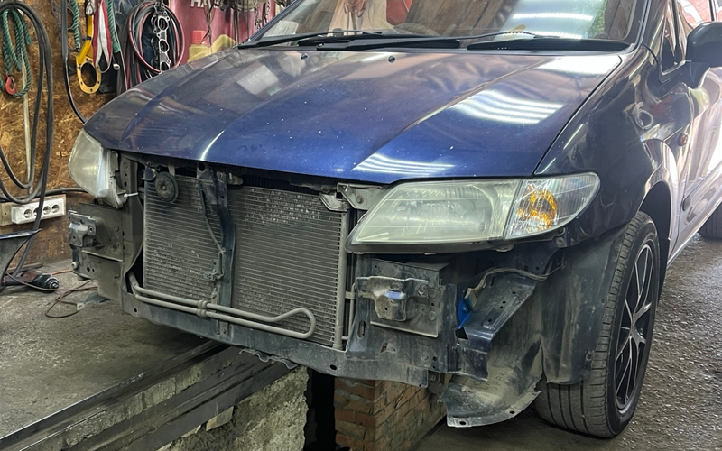
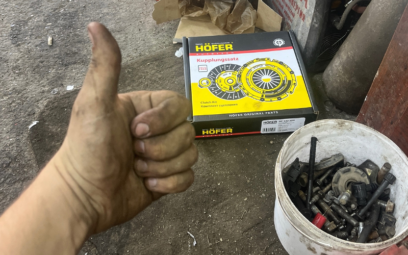

Честный кузовной ремонт в Красноярске. Гуманные цены, реальные сроки. Работаем по принципу — делаем как было.
Позвонить: 296-20-99От небольшой вмятины до полного восстановления геометрии кузова — делаем так, будто ничего не было.

Полная и частичная покраска кузова, точный подбор цвета в тон заводской краске.
ПодробнееРемонт бамперов и других пластиковых элементов кузова: трещины, сколы, разрывы.
ПодробнееРазборка, чистка, полировка и обратная сборка фар — возвращаем прозрачность и яркость света.
ПодробнееВытягивание кузова на стапеле, восстановление правильной геометрии после серьёзных ударов.
ПодробнееВырезка повреждённых участков и точная установка новых элементов кузова.
ПодробнееАккуратное снятие и установка автостёкол с полной герметизацией.
ПодробнееВосстанавливаем несущие элементы кузова там, где начинается коррозия и усталость металла.
Ремонт и восстановление полов и «ванн» кузова с сохранением жёсткости конструкции.
ПодробнееФинальный штрих после ремонта или просто уход за автомобилем.
Перетяжка руля кожей, ремонт и обновление элементов салона.
ПодробнееОбслуживаем механическую часть автомобиля — не только кузов.

Два адреса в Красноярске — кузовной ремонт и слесарные работы.
проезд Связистов, 17 ст4, Красноярск
Пн–Сб 9:00–19:00, Вс — выходной
ул. Волгоградская, 2б, бокс 75, Красноярск
Пн–Сб 9:00–19:00, Вс — выходной
Реальные фото и видео с ремонтов. Кликните по фото, чтобы увеличить.